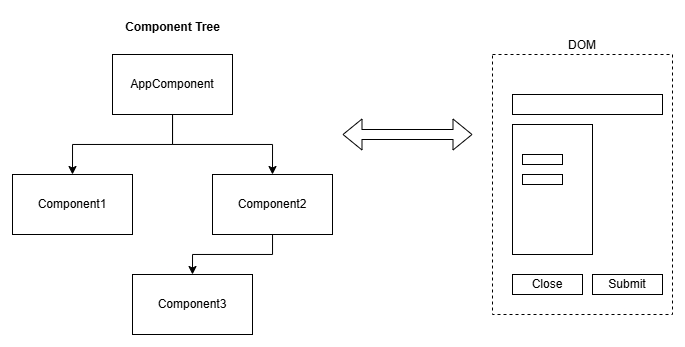

It's a Sign(al)!
Let's talk
 ngular Reactivity
ngular Reactivity
'bout the guys:

Antonio
Full-Stack Software Engineer working mostly in Web Development, but with a passion and experience
with DevOps and Architecture. Also as fun fact, enjoys playing D&D with friends in my free time.
Tudor
Frontend Developer and Angular enthusiast with nearly 7 years of experience
and, surprisingly enough, no toxic relationship with CSS yet. With a few
training sessions and talks on the topic, I like bringing high energy,
fast-paced insights, and the occasional bad puns :)
Today's agenda:
But wait ...
Now that that's settled, the agenda:
- Short intro
- Primitives and some use cases
- State management
- Q&A
- Very neat, little surprise to wrap up in style!
Change Detection Model (Default)
Change Detection Model (OnPush)
- This is all about limiting the scope of the search
- It does not check a component for changes unless specifically marked
- But it still runs from the AppComponent Root
How OnPush Change Detection marks Components as dirty
- The immutable Inputs reference have changed
- You manually run markForCheck()
- Component event handler gets triggered (e.g.: button click inside OnPush component)
- Async Pipe
- And of course, right now: "A Signal is changed"
The future is Zoneless
- Will offer a fine-grained way to marking a component as dirty
- But it will also trigger change detection for that component
Migration Tip
Make sure all your component have OnPush Change Detection
So what exactly is a Signal?
A wrapper over a value of any kind
that notifies interested consumers
when the value changes
and that granularly tracks where is is used
in order to optimize DOM updates
TLDR
Let's dive right in!
We all like surprises and especially freebies, so, time for...
Kahoot link/code/QR/whateverThat's a wrap!
Special thanks to:
and to each and every single one of you!